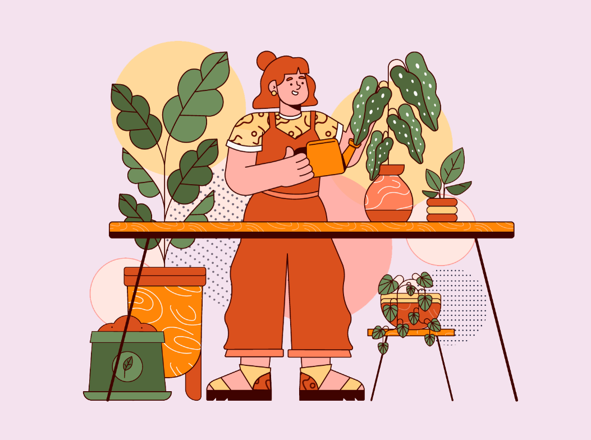

For a more low-key houseplant experience, we often recommend buying your houseplants in a state close to how you’d like them to stay. When you do this, the care is all about straightforward maintenance, not drastic growth and transformation.
Let’s say you want a Fiddle Leaf Fig with a tall stately trunk and full head of leaves (a so-called standard, or tree-form) to make a big statement in your space. In this case, we'd typically say to buy when they already have a few branches. Not when they're still a little baby bush or straight column shape. But what happens when you already have one at home?
Well… it will take a bit of nerve, some knife skills, and a lot of patience, but you can transform your plant! The methods we’ll go through apply directly to all your ficus friends like Rubber Trees and Ficus Audrey, but the concept translates to most plants with woody stems or trunks. Think Dracaena friends (like marginata or reflexa) and Schefflera. We’ll refer to the Fiddle Leaf Fig (FLF) in most of our examples but keep this in mind as you’re reading!
When you buy a Fiddle Leaf Fig, they may come in a tall, straight column. Or they could look more like a shrub or bush. You might figure that the branches will show up on their own—after all, if you’re caring for them properly, they will grow like you want, right?
Not exactly...our houseplant friends have minds of their own. They remember where they come from and grow in a way their environment encourages them to—focusing all their energy to stretch towards the sun. Another thing to keep in mind is that these are juvenile species that have yet to mature into the full-on tree they could become in the wild (up to 50 feet tall!). So essentially, they are still just working on getting big and tall, which is progress... But where are those branches?
Well, before you start working with your plant to encourage branching, make sure they're happy first. You’ve got them in a place where they're actively growing, you have their watering needs down, and the plant is promoting new growth on their own.
Many gardeners use the term pinching—it’s a well-known trick for promoting fuller growth. And the same thing applies to our houseplant friends. It will basically tell the plant to grow twice as many stems where you pinched. This is perfect when you want the plant to redirect their growth a bit.
Pinching works well for those shorter bush-like Fiddle Leaf Figs that have gotten to a height where you’d like to start seeing branches. For example, if you’ve been growing your FLF for a while and have a 3-foot bush but no branches, this is the method for you!
When you pinch back new growth, it directs focus from growing up to growing out. Essentially you are saying: okay, plant, I see you and your growth but let’s redirect that attention to growing some branches! This allows you to control the height and branching capabilities of the plant.
It may seem counter-intuitive to remove new growth. The first time you do it, you may think you’re about to murder the plant! It’s okay to be nervous—but trust us, this is a tried and true method to promote growth.
And that’s all there is to it! You may see some sap coming out of the area you pinched. If you do, take a paper towel or cloth, and dab it away. You probably don’t want to wipe it away directly with your fingers because the sap has been known to irritate skin. You can also just leave it be.
You’ve probably heard of pruning back shrubs and bushes to get them under control but may not have heard of it as a way to promote growth on houseplants.
And it has the added bonus of allowing for propagation.
Pruning is essentially taking off the top of the plant—and it promotes branching where you remove the plant. So, if you have a 5-foot tree and really want a branch about 2 feet down, you can cut off 2 feet of the tree.
Yes, it may wrack your nerves a little and look bare at first—after all, you did just chop off a big piece of your plant! But your nerves will be rewarded with major growth! It just takes time to grow back, so be prepared to wait a little bit.
Do make sure to research the specific needs of your plant friend. If you cut the top off a Norfolk Pine, they're not likely to grow back! So it’s always best to double check.
Pruning makes sense when you want to encourage growth and branching at a specific point. If your tree is starting to hit the ceiling or lean under their own weight AND you can stomach cutting off a piece, pruning is your best bet! It's also something to consider for any houseplant that's getting "leggy" (stretched out, skimpy looking growth) and you'd like to encourage fuller or bushier growth.
It may seem terrifying to cut off a whole section of the plant you’ve been working so hard to nurture. But ultimately, it’s the best way to promote even more growth. It behaves a bit like pinching, where the plant will grow more in the area you cut back. And continue to grow after the cut.
When you cut off the top of your ficus, you can propagate that piece instead of tossing it. Why not, right? You’re already learning to develop quite the green thumb by branching and shaping. Now it’s time to create some plant grand-babies.